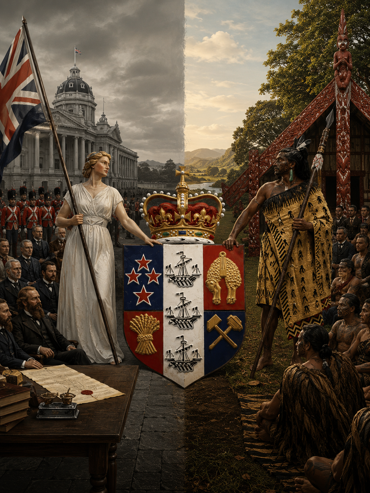
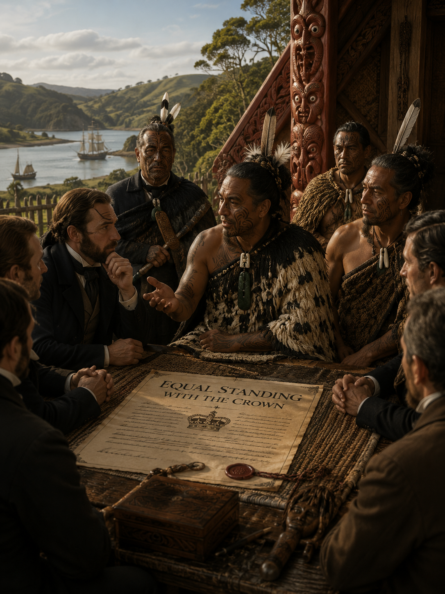
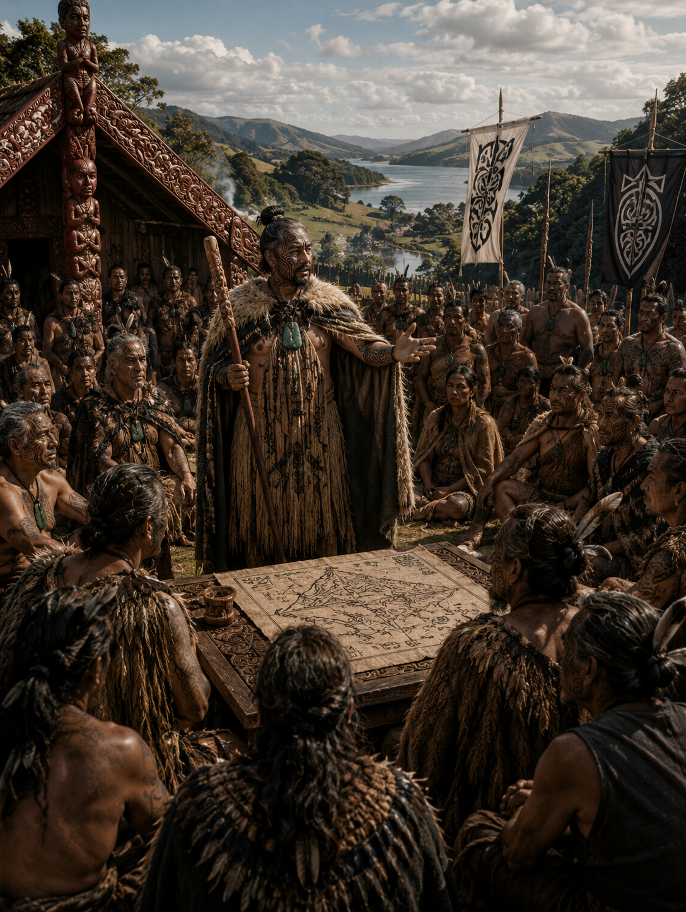
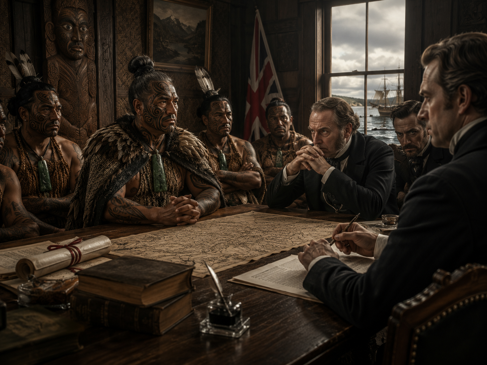

Read the Story
Part 1: Two Peoples, Two Systems
By the middle of the nineteenth century, British settlers in New Zealand were subjects of Queen Victoria. The Crown represented them through a single monarch and a colonial government that claimed authority across the country.
Māori society was organised differently. Authority was held by many iwi, hapū and rangatira. Each community had its own leaders, relationships and responsibilities. There was no single person who spoke for Māori as a whole.
For generations, that had not been a problem. Māori political life had never depended on one national ruler. However, as the colonial government became stronger, the difference between the two systems became increasingly important.

Retrieval Cards
Flip each card to retrieve a key detail.
Best Explanation
Choose the statement that best explains the political difference.
What was the main difference between the two systems?
Part 2: Searching for Equal Standing
As land sales accelerated and colonial institutions expanded, some Māori leaders began to question whether separate iwi could negotiate effectively with a government that claimed to speak through one sovereign.
The British population was represented by a queen. Māori, by contrast, were represented through many rangatira whose authority was respected within their own communities but did not form a single national voice.
For some leaders, the answer was not to abandon tribal authority, but to create a shared figure who could stand alongside the Crown. A Māori monarch might give many iwi a stronger collective presence and a more equal political footing.
This was not simply imitation. The proposal adapted the idea of monarchy to Māori purposes: unity, protection, representation and the preservation of authority.

What Is the Author Arguing?
Select the strongest summary of this section.
Why did some Māori leaders support the idea of a monarch?
Vocabulary in Context
Use these words to understand the political ideas in the text.
Explain the Distinction
Show that you understand the difference between imitation and adaptation.
Part 3: The First Vision of a Māori Nation
The most radical feature of the movement was not the title of king itself. It was the proposal that many iwi could act together within a broader political community.
Māori identity had long been grounded in whakapapa, hapū and iwi. The Kīngitanga did not seek to erase these loyalties. Instead, it attempted to build a collective identity above them: a shared Māori political cause that could exist alongside tribal independence.
In this sense, the movement represented one of the earliest serious attempts to imagine a Māori nation. The word nation must be used carefully, because supporters were not trying to create a modern state in exactly the European sense. They were developing a new structure of unity capable of coordinating many communities around common interests.
That idea was politically significant. A population previously approached as separate tribes was beginning to organise as a connected people with shared aims, recognised leadership and a stronger collective voice.

Find the Evidence
Select the sentence that best supports the statement.
Interpret the Word “Nation”
Explain the complexity of the author's language.
Main Argument
Choose the idea that best captures the significance of the movement.
What made the Kīngitanga politically significant?
Part 4: A Competing Centre of Authority
Supporters of the Kīngitanga generally understood the movement as defensive. They wanted to protect land, strengthen Māori decision-making and create a structure through which iwi could cooperate without surrendering their own mana.
Colonial officials often interpreted the same development in a very different way. The Crown claimed sovereignty over New Zealand. A movement with its own monarch, territory, rules and political organisation could therefore appear to be an alternative centre of authority.
The dispute was not simply about personalities. It raised constitutional questions: Who possessed the right to govern? Could Māori exercise collective authority within a colony ruled by the Crown? Could two systems of leadership coexist, or would one inevitably be treated as subordinate to the other?
For supporters, the Kīngitanga represented protection and equality. For the colonial government, it increasingly appeared to challenge the legitimacy and reach of Crown rule.

Perspective Sort
Decide which viewpoint each statement most closely reflects.
Historical Interpretation
Explain why the same movement could be understood in opposite ways.
Which Question Is Constitutional?
Select the question that most directly concerns political authority.
Which question is constitutional?
Part 5: A Country at a Turning Point
By the early 1860s, the Kīngitanga had developed from a political proposal into one of the most important organised movements in New Zealand. It possessed recognised leadership, widespread support and the ability to coordinate action across iwi boundaries.
Its supporters believed they were constructing a framework for equality, protection and collective self-determination. Colonial leaders increasingly believed they were confronting a rival political power.
Governor George Grey viewed the movement with deep suspicion. Military preparations intensified, and the construction of the Great South Road made it easier to move troops and supplies towards Waikato.
These preparations did not occur in a political vacuum. They reflected a growing conviction within the colonial government that the Kīngitanga could not be allowed to exercise independent authority. At the same time, many Māori interpreted government pressure as evidence that their land, leadership and autonomy were under threat.
Both sides believed they were defending something essential. One defended the unity and authority of the Crown. The other defended land, mana and a new vision of Māori collective power.
The disagreement had moved beyond debate. New Zealand was approaching war.
Which Evidence Supports the Claim?
Choose the detail that best supports the statement.
Author's Main Argument
Identify the central idea of the entire page.
What is the main argument of this page?
Extended Historical Response
Use evidence from across the page.
Looking Ahead
Predict the next stage of the story.